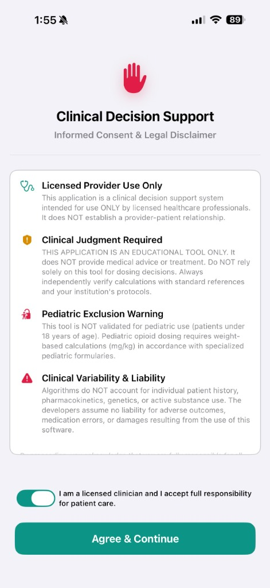
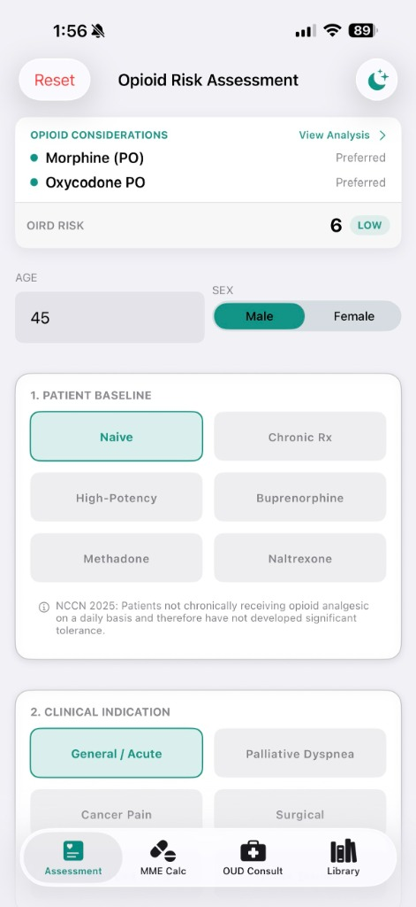
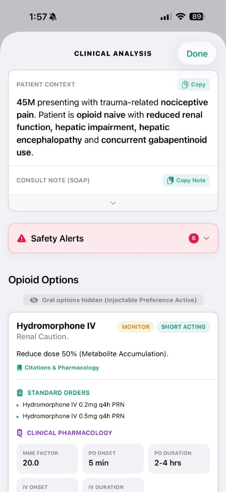
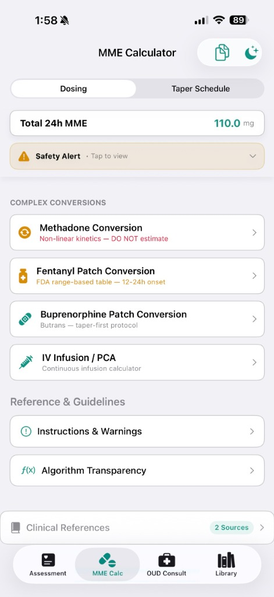
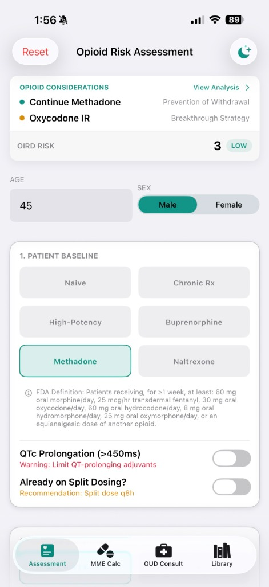
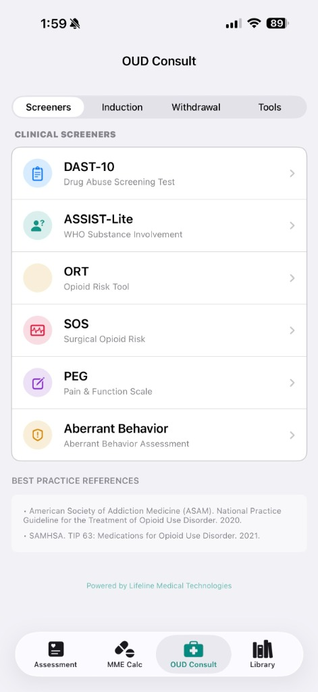
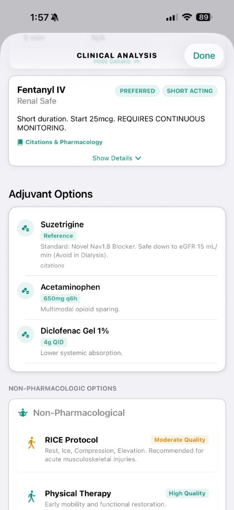

Flagging Vulnerability & Surfacing GFR Limits
Manual opioid safety assessments are often missed or inconsistent on busy hospital floors. Precision Analgesia automates risk scoring and surfaces a specific, guideline-cited recommendation at the moment of prescribing, which the clinician reviews and can accept, adjust, or override, with every override logged.
PRODIGY-Aligned Scoring
Calculates Opioid-Induced Respiratory Depression (OIRD) scores based on age, sleep disorders, cardiac, and pulmonary comorbidities.
Organ-Specific Guardrails (Renal Gating)
GFR-gating logic flags active metabolites (e.g. Morphine accumulation) and surfaces a recommended ~50% dose reduction for compromised renal clearance, which the clinician reviews and can accept or override, with the override logged.
Informed Consent Disclaimers
Every login enforces a clinical responsibility toggle, ensuring the software operates strictly as a decision support aid.



Replacing Single-Ratio Charts with Dose-Dependent Tiered Conversions
Standard single-ratio equianalgesic charts ignore dose-dependent potency shifts, incomplete cross-tolerance, and slow patch accumulation. Precision Analgesia applies dose-dependent tiered conversion tables (7 tiers for methadone, VA/DoD 2022 + NCCN 2025) with automatic cross-tolerance reductions, dose caps, a conservative geriatric override, and a hard refusal above 1200 MME.
Dynamic Cross-Tolerance Controls
Allows the clinician to dynamically slide and adjust cross-tolerance reductions (defaulting to safe CDC parameters of 30-50%).
Complex Conversion Matrices
Built-in logic for tiered, dose-dependent Methadone conversions, Fentanyl and Buprenorphine patch conversions, and continuous IV infusions.
CDC-Aligned 2-Phase Tapering
Automatically charts exponential and linear step-downs, plotting a clean step-down graph to prepare safe outpatient discharge tapers.



Standardizing OUD Pathways & Screening
Inpatient admission is a critical window to address substance use. Precision Analgesia provides bedside tools to screen patients and guide transitions to Medication-Assisted Treatment (MAT).
Integrated Screener Batteries
Access validated screeners (DAST-10, ASSIST-Lite, Opioid Risk Tool, PEG Pain & Function Scale) directly at the point of care.
COWS & Induction Protocols
Clinical workflows for buprenorphine inductions based on live Clinical Opiate Withdrawal Scale (COWS) scores.
Multimodal Sparing Options
Recommends evidence-based adjuvants (such as Suzetrigine, Acetaminophen) and non-pharmacological options to spare MME exposure.



Regulatory & Compliance Specifications
Precision Analgesia is designed around clear regulatory guardrails intended to support its self-assessed positioning as an informational logic layer rather than an active medical device.
Non-Device Clinical Decision Support (CDS)
Precision Analgesia is self-assessed as a Non-Device Clinical Decision Support software tool under the 21st Century Cures Act (statutory criteria in effect since 2016), consistent with FDA's January 6, 2026 CDS guidance — pending confirmatory review by regulatory counsel; no confirmatory classification memo has been obtained. The software presents clinical guidelines (CDC 2022, NCCN 2025, and FDA guidelines) transparently, displaying all formulas, equianalgesic ratios, and sources directly in the application's "Algorithm Transparency" and "Citations" interfaces.
It does not directly control, configure, or administer patient dosing hardware (such as infusion pumps), nor does it replace the diagnostic or treatment path decided by the licensed practitioner. Every recommendation is presented as advisory: the clinician sees the reasoning and can accept, adjust, or override it, with all overrides logged. The only non-overridable rule is a pediatric gate blocking codeine/tramadol prescribing under age 12, per FDA Black Box warnings.
This software is an educational support tool. The clinician retains full, final responsibility for patient care, diagnoses, and prescription quantities. All conversions and calculations should be manually verified against institutional protocols before ordering.
References used in development:
- CDC Clinical Practice Guideline for Prescribing Opioids (2022)
- PRODIGY Clinical Trial (OIRD Respiratory Depression risk factors)
- ASAM National Practice Guideline for OUD treatment (2020)
- NCCN Guidelines for Adult Cancer Pain Management (2025)